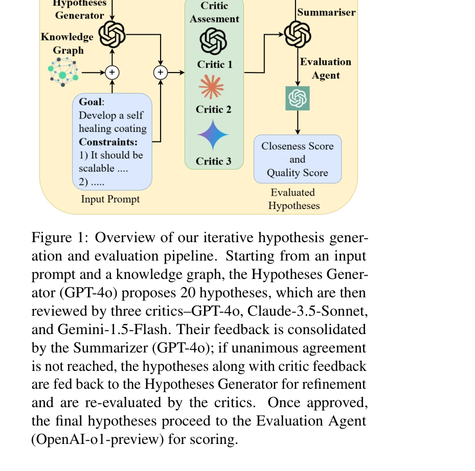
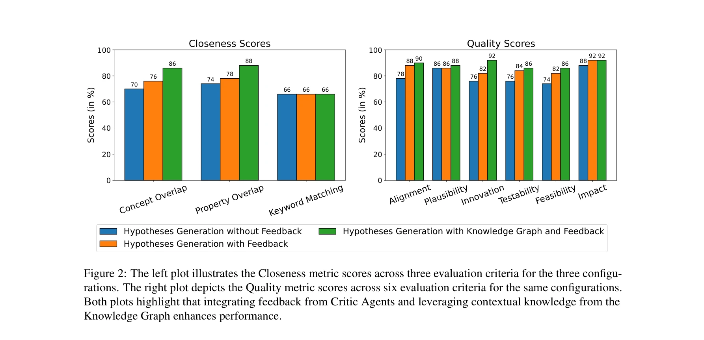

저자: Shrinidhi Kumbhar, Venkatesh Mishra, Kevin Coutinho, Divij Handa, Ashif Iquebal | 날짜: 2025 | DOI: 10.48550/arXiv.2501.13299

Figure 1: Overview of our iterative hypothesis gener-
Materials discovery 가속화를 위해 목표 기반의 제약 조건이 있는 LLM agent를 설계하고, 실제 논문 데이터로 구성된 MATDESIGN 벤치마크와 함께 가설 생성 및 평가 프레임워크를 제시한다.

Figure 2: The left plot illustrates the Closeness metric scores across three evaluation criteria for the three configu-
Figure 1: Overview of our iterative hypothesis gener-
총평: 본 논문은 materials discovery 가속화를 위한 tool-free LLM agent 프레임워크와 함께 데이터 유출 문제를 해결한 MATDESIGN 벤치마크, 그리고 재료 과학자의 평가 기준을 반영한 이원 메트릭을 제시하여 LLM 기반 가설 생성 연구의 중요한 진전을 이루었다.